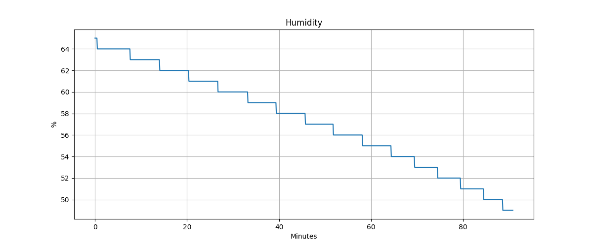
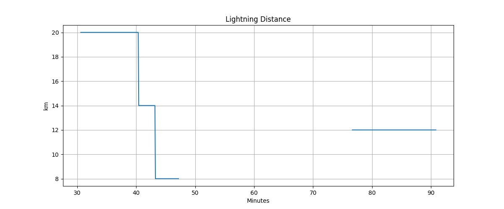
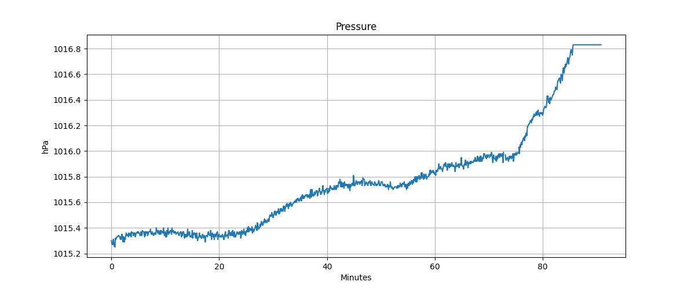

Weather Records
Personal weather observations from Temecula, California and North Port, Florida.
September 8, 2026 · Temecula, California
Tornado Probe Intercept · approximately 5:15–5:37 PM PDT
These charts are approximate visual reconstructions from the supplied chart images. Exact raw CSV readings were not available.
July 30, 2026 · North Port, Florida
Weather observations and lightning distance. The recording was started around 6:31 am. The CSV's elapsed video time and Clock Time values are shown as provided.
Download the North Port weather CSVHumidity

Lightning Distance

Pressure

The temperature readings in the provided CSV are blank, and the temperature image has no plotted data. The image files currently use the uploaded names in the images folder.